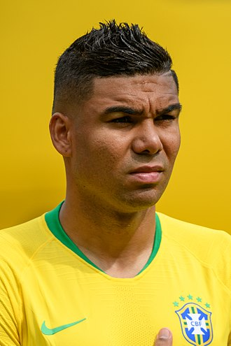

| Nombre | Posición | Edad | Bibliografía | Portada |
|---|---|---|---|---|
| Bruno Guimaraes | Mediocentro defensivo | 27 |
Bruno Guimarães es un futbolista brasileño nacido el 16 de noviembre de 1997 en Rio de Janeiro, Brasil. Juega como mediocampista y es conocido por su gran visión de juego, capacidad de recuperación y distribución del balón.
|
|
| Alisson Becker | Portero | 32 |
Alisson Becker es un futbolista brasileño, reconocido mundialmente por su desempeño como arquero. Actualmente juega como portero en el Liverpool Football Club de la Premier League inglesa y es el arquero titular de la selección brasileña de fútbol.
|
 |
| Casemiro | Mediocentro defensivo | 33 |
Carlos Henrique Casimiro, conocido como Casemiro, nació el 23 de febrero de 1993 en São José dos Campos, Brasil. Es un mediocampista defensivo reconocido por su capacidad para recuperar balones y proteger la defensa.
|
 |
| Danilo Luiz da Silva | Lateral derecho | 34 |
Danilo Luiz da Silva nació el 15 de julio de 1991 en Bicas, Brasil. Es un futbolista que juega principalmente como lateral derecho, aunque también puede desempeñarse como lateral izquierdo o mediocampista defensivo.
|
|
| Endrick | Delantero centro | 19 |
Endrick es un futbolista brasileño nacido el 21 de julio de 2006 en São Paulo, Brasil. Juega como delantero y es conocido por su gran velocidad, habilidad para definir y su capacidad para generar peligro constante en el área rival.
|
|
| Estevao | Extremo izquierdo | 18 |
Estêvão da Silva Escobar es un futbolista brasileño nacido el 10 de marzo de 2004 en São Paulo, Brasil. Juega como centrocampista ofensivo y se destaca por su creatividad, visión de juego y habilidad para asistir a sus compañeros.
|
|
| Gabriel Jesus | Delantero centro | 26 |
Gabriel Fernando de Jesus nació el 3 de abril de 1997 en São Paulo, Brasil. Es un delantero versátil conocido por su velocidad, técnica y capacidad goleadora.
|
 |
| Marquinhos | Defensa central | 28 |
Marcos Aoás Corrêa, conocido como Marquinhos, nació el 14 de mayo de 1994 en São Paulo, Brasil. Es un defensor central reconocido por su solidez, técnica y capacidad para liderar la defensa.
|
|
| Militão | Defensa central | 26 |
Éder Gabriel Militao nació el 18 de enero de 1998 en Sertãozinho, Brasil. Es un defensor central rápido y técnico, con capacidad para jugar también como lateral derecho.
|
|
| Neymar Jr. | Extremo izquierdo | 31 |
Neymar da Silva Santos Júnior nació el 5 de febrero de 1992 en Mogi das Cruzes, Brasil. Es uno de los futbolistas más reconocidos mundialmente por su habilidad, regate y capacidad goleadora.
|
|
| Rodrygo | Extremo derecho | 23 |
Rodrygo Silva de Goes nació el 9 de enero de 2001 en Osasco, Brasil. Es un extremo derecho conocido por su velocidad, técnica y capacidad para asistir y marcar goles.
|
|
| Vinicius Jr. | Extremo izquierdo | 23 |
Vinícius José Paixão de Oliveira Júnior, conocido como Vinicius Jr., nació el 12 de julio de 2000 en São Gonçalo, Brasil. Es un extremo izquierdo reconocido por su velocidad, regate, creatividad y capacidad para definir.
|